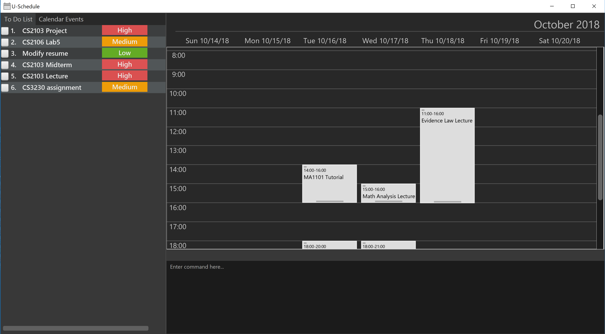

By: Team T10-1
- 1. Introduction
- 2. Quick Start
- 3. Features
- 3.1. Viewing help :
help - 3.2. Adding:
add - 3.3. Listing:
list - 3.4. Editing:
edit - 3.5. Searching for events:
find event - 3.6. Deleting:
delete - 3.7. Selecting:
select - 3.8. Showing description:
showDescription - 3.9. Listing entered commands :
history - 3.10. Undoing previous command :
undo - 3.11. Redoing the previously undone command :
redo - 3.12. Clearing all entries :
clear - 3.13. Using the Calendar Display
- 3.14. Exiting the program :
exit - 3.15. Saving the data
- 3.16. Encrypting data files
[coming in v2.0]
- 3.1. Viewing help :
- 4. FAQ
- 5. Command Summary
1. Introduction
U-Schedule is for university students who prefer to use a desktop app for managing their schedule. More importantly, U-Schedule is optimized for those who prefer to work with a Command Line Interface (CLI) while still having the benefits of a Graphical User Interface (GUI). It features a calendar to manage regular events such as lectures and tutorials, as well as a todo list for upcoming deadlines. If you can type fast, you can manage both of these more efficiently with U-Schedule than traditional GUI apps. Interested? Jump to the Section 2, “Quick Start” to get started. Enjoy!
2. Quick Start
-
Ensure you have Java version
9or later installed in your Computer. -
Download the latest
u-schedule.jarhere. -
Copy the file to the folder you want to use as the home folder for this application.
-
Double-click the file to start the app. The GUI should appear in a few seconds.
 -
Type the command in the command box and press Enter to execute it.
e.g. typinghelpand pressing Enter will open the help window. -
Some example commands you can try:
-
list event: lists all calendar events -
list todo: lists all todo items -
add eventt/CS2103 Lecture d/Abstraction, IntelliJ, Gradle s/16 nov 4pm e/16 nov 6pm v/i3 Auditorium tag/lecture: adds a calendar event titledCS2103 Lectureto the calendar. -
add todot/CS2103 Assignment d/Version Control p/H: adds a todo item titledCS2103 Assignmentto the todo list. -
**
find event cs2103: shows all events with title, description or venue matchingcs2103 -
delete event3: deletes the calendar event marked3. -
delete todo3: deletes the todo item marked3. -
show todo3: show the description of todo item marked3. -
exit: exits the app
-
-
Refer to Section 3, “Features” for details of each command.
3. Features
Command Format
-
Words in
UPPER_CASEare the parameters to be supplied by the user e.g. inadd event t/TITLE,TITLEis a parameter which can be used asadd event t/CS2103 Lecture. -
Items in curly brackets denote the choices of words that can be used. e.g.
add {event/todo} -
Items in square brackets are optional e.g
t/TITLE [tag/TAG]can be used ast/CS2103 Lecture tag/lectureor ast/CS2103 Lecture. -
Items with
… after them can be used multiple times including zero times e.g.[tag/TAG]…can be used astag/lecture,tag/cs2103etc. -
Parameters can be in any order e.g. if the command specifies
t/TITLE d/DESCRIPTION,d/DESCRIPTION t/TITLEis also acceptable. -
The second word specifies whether the command will operate on the todo list or the calendar. For example
add eventadds an event to the calendar andadd todowill add an item to the todo list. -
Priorities on the todo list are either
H,MorLfor high, medium or low respectively, in upper case.
3.2. Adding: add
Adds a calendar event to the calendar
Format: add event t/TITLE d/DESCRIPTION s/START_DATETIME e/END_DATETIME v/VENUE [tag/TAG]…
Adds an item to the todo list
Format: add todo t/TITLE d/DESCRIPTION p/{H/M/L}
| A calendar event can have any number of tags. (including 0) |
Examples:
-
add event t/CS2103 Lecture d/Abstraction, IntelliJ, Gradle s/16 oct 2pm e/16 oct 4pm v/i3 Auditorium tag/lecture -
add todo t/CS2103 Assignment d/Version Control p/L
3.3. Listing: list
Shows the list of all calendar events / todo items in the calendar / todo list.
Format: list {event/todo}
3.4. Editing: edit
Edits an existing calendar event in the calendar.
Format: edit event INDEX [t/TITLE] [d/DESCRIPTION] [s/START_DATETIME] [e/END_DATETIME] [v/VENUE] [tags/TAG]…
Examples:
-
edit event 1 d/Abstraction v/i3 Auditorium
Edits the description and venue of the calendar event to beAbstraction ` and `i3 Auditoriumrespectively. -
edit event 2 t/CS2103 Project Meetup
Edits the name of the 2nd calendar event to beCS2103 Project Meetup.
3.5. Searching for events: find event
Finds calendar events whose title, venue or description match any of the given keywords.
Also optionally filters the search by the specified date & time interval as well as the specified tags.
Format: find event [KEYWORD MORE_KEYWORDS…] [from/DATE & TIME] [to/DATE & TIME] [tag/TAG] [tag/MORE_TAGS]…
Examples:
-
find event lecture
Returns list of events whose title, venue or description matches the keywordlecture. -
find event cs2103 assignment tag/Project
Returns list of events matching the keywordscs2103andassignment, and having the tagProject -
find event exam from/29 nov 8am to/7 dec 5pmReturns list of events matching the keywordexam, that is ongoing at some point between 8am on 29th November and 5pm on 7th December. -
find event project tag/CS2103 from/15 nov 10am ` Returns list of events matching the keyword `project, having the tagCS2103, that is ongoing at some point after 10am on 15th November. -
find event tag/cs2103 tag/lectureReturns list of events having both the tags 'CS2103' and 'Lecture' (i.e. events with only theCS2103tag but not theLecturetag would be excluded).
3.6. Deleting: delete
Deletes the specified calendar event / todo item from the calendar / todo list.
Format: delete {event/todo} INDEX
Examples:
-
list event
delete event 2
Deletes the 2nd calendar event in the calendar. -
find event assignment
delete event 1
Deletes the 1st calendar event in the results of thefind eventcommand. -
list todo
delete todo 1
Deletes the 1st todo item in the todo list.
3.7. Selecting: select
Selects the calendar event identified by the index number used in the displayed list.
Format: select event INDEX
Examples:
-
list event
select event 2
Selects the 2nd calendar event in the calendar. -
find event lecture
select event 1
Selects the 1st calendar event in the results of thefind eventcommand.
3.8. Showing description: showDescription
Shows description of the specified todo item from the todo list.
Format: show todo INDEX
Examples:
-
list todo
show todo 1
Shows description of the 1st todo item in the todo list.
3.9. Listing entered commands : history
Lists all the commands that you have entered in reverse chronological order.
Format: history
|
Pressing the ↑ and ↓ arrows will display the previous and next input respectively in the command box. |
3.10. Undoing previous command : undo
Restores the calendar to the state before the previous undoable command was executed.
Format: undo
|
Undoable commands: those commands that modify the calendar’s /todo list’s content ( |
Examples:
-
delete event 1
list event
undo(reverses thedelete event 1command) -
select 1
list event
undo
Theundocommand fails as there are no undoable commands executed previously. -
delete event 1
clear
undo(reverses theclearcommand)
undo(reverses thedelete event 1command)
3.11. Redoing the previously undone command : redo
Reverses the most recent undo command.
Format: redo
Examples:
-
delete event 1
undo(reverses thedelete event 1command)
redo(reapplies thedelete event 1command) -
delete event 1
redo
Theredocommand fails as there are noundocommands executed previously. -
delete event 1
clear
undo(reverses theclearcommand)
undo(reverses thedelete event 1command)
redo(reapplies thedelete event 1command)
redo(reapplies theclearcommand)
3.12. Clearing all entries : clear
Clears all entries from the calendar.
Format: clear calendar
3.13. Using the Calendar Display
3.13.1. Manual navigation:
Navigating the calendar to viewing the events:
-
←: Display previous week
-
→: Display next week
-
↑: Scroll up to events earlier in the day
-
↓: Scroll down to events later in the day
|
Scrolling with the mouse wheel is also possible. |
|
The calendar display must be in focus in order to navigate with the arrow keys. |
3.13.2. Automatic Navigation:
When selecting an event, either by the select command or clicking in the list of calendar events,
the calendar display will navigate to that event and attempt to centralize it in the calendar.
3.13.3. Viewing Event Details
The compact display of the calendar does not allow all the information of the event to be displayed. To view full details of an event, double click on it to open a dialog box containing the details of the event.
3.14. Exiting the program : exit
Exits the program.
Format: exit
3.15. Saving the data
Application data is saved in the hard disk automatically after any command that changes the data.
There is no need to save manually.
3.16. Encrypting data files [coming in v2.0]
{explain how the user can enable/disable data encryption}
4. FAQ
Q: How do I transfer my data to another Computer?
A: Install the app in the other computer and overwrite the empty data file it creates with the file that contains the data of your previous U-Schedule folder.
Q: Why is the calendar display not responding to the arrow keys?
A: The calendar display must be in focus in order for it to receive the arrow key events. Try clicking on the calendar display. If a blue highlight is present around the edges, the calendar display is in focus and will now receive the key presses.
Q: The date time parser is parsing dates unexpectedly!
A: The Natural Language Parser we used tries its best to parse a datetime out of any input. Hence, there are some inputs which even humans would not consider a valid date, but the parser would still try to find a best fit. Most of the time, if a human can understand the input, the parser will parse the input correctly.
5. Command Summary
-
Add
add event t/TITLE d/DESCRIPTION s/START_DATETIME e/END_DATETIME v/VENUE [tag/TAG]…
e.g.add event t/CS2103 Lecture d/Abstraction, IntelliJ, Gradle s/2018-10-16 14:00 e/2018-10-16 16:00 v/i3 Auditorium tag/lecture -
Add
add todo t/TITLE d/DESCRIPTION p/{H/M/L}
e.g.add todo t/CS2103 Assignment d/Version Control p/L -
Clear :
clear calendar -
Delete :
delete {event/todo} INDEX
e.g.delete event 3 -
Edit :
edit event INDEX [t/TITLE] [d/DESCRIPTION] [s/START_DATETIME] [e/END_DATETIME] [v/VENUE] [tag/TAG]…
e.g.edit event 1 d/Abstraction v/i3 Auditorium -
Find :
find event [KEYWORD MORE_KEYWORDS…] [from/DATE & TIME] [to/DATE & TIME] [tag/TAG] [tag/MORE_TAGS]
e.g.find event CS2103 Lecture from/16 Nov 8am tag/PE -
List :
list {event/todo} -
Help :
help -
Select :
select {event/todo} INDEX
e.g.select event 2 -
ShowDescription :
show todo INDEX
e.g.show todo 2 -
History :
history -
Undo :
undo -
Redo :
redo -
Calendar navigation : ↑ ↓ ← →